It is crucial to acknowledge that the land of Shark Bay is the traditional land of aboriginal groups,
including the Malgana, Nanda and Gnulli peoples. The region—known as Gutharraguda in the Malgana
language—contains about 130 registered heritage sites which are protected by the Aboriginal Heritage
Act. It is illegal to disturb these sites.
European occupation has destroyed and harmed the ecology and people of the area, and cannot be ignored
or dismissed. Today, aboriginal groups collaborate with the Parks and Wildlife Services to work
towards research and conservation projects.
“Nhanganha Gutharraguda, Wula guda nyinda.”
— Malgana —
“This is Shark Bay. You come this way.”
— English —
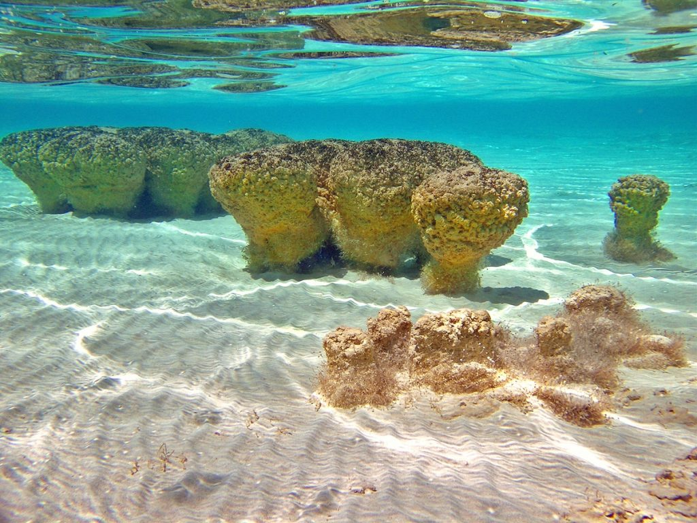
Stromatolites submerged under water
3B YEARS AGO
Microbial mats and stromatolites began to form in the extreme heat and water salinity as bacteria clumped together and calcified.
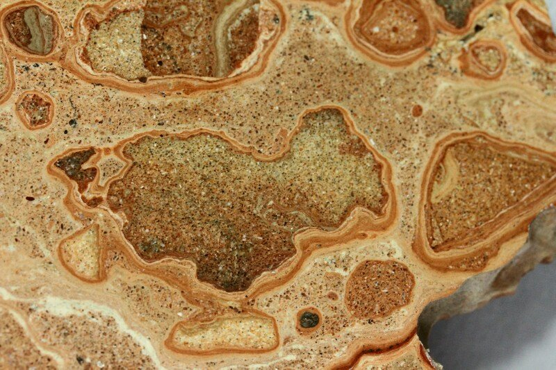
The interior of a stromatolite
2B YEARS AGO
Cyanobacteria in microbial mats breathed oxygen into the atmosphere, influencing the evolution of complex life forms.
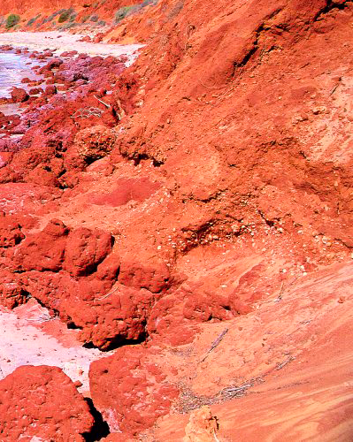
Peron Sandstone
2M - 10K YEARS AGO
Red sand (tinted by a coating of iron oxide) collected over the land, and was shaped into dunes by the wind and river. It cemented into Peron sandstone.
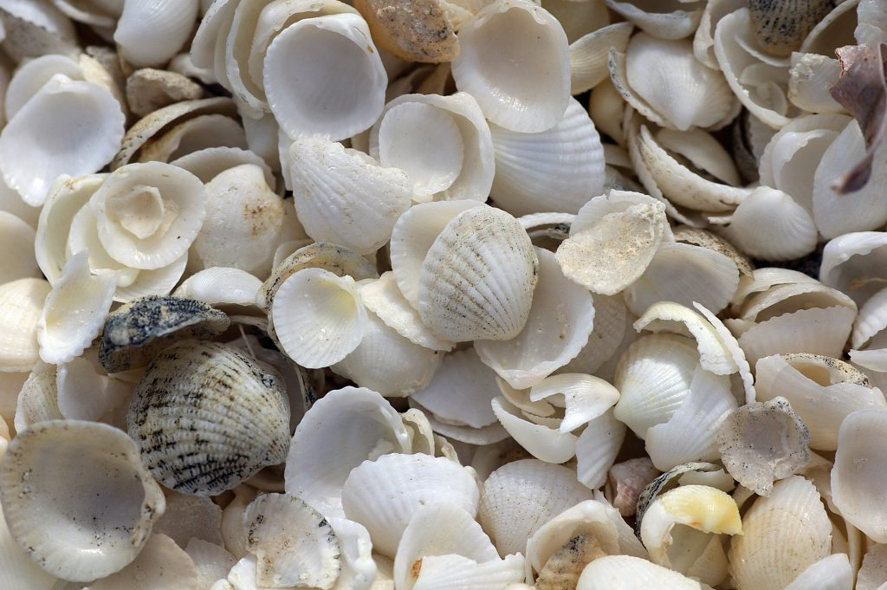
White shells which create Tamala Limestone
1M - 10K YEARS AGO
White sand made up of broken shells, corals, and skeletons was deposited on top of the Peron sandstone in many areas, creating Tamala limestone.
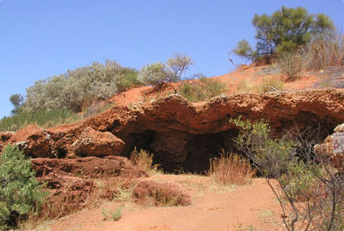
Cave shelter at Monkey Mia
30K YEARS AGO
The land was first occupied by the aboriginal people.
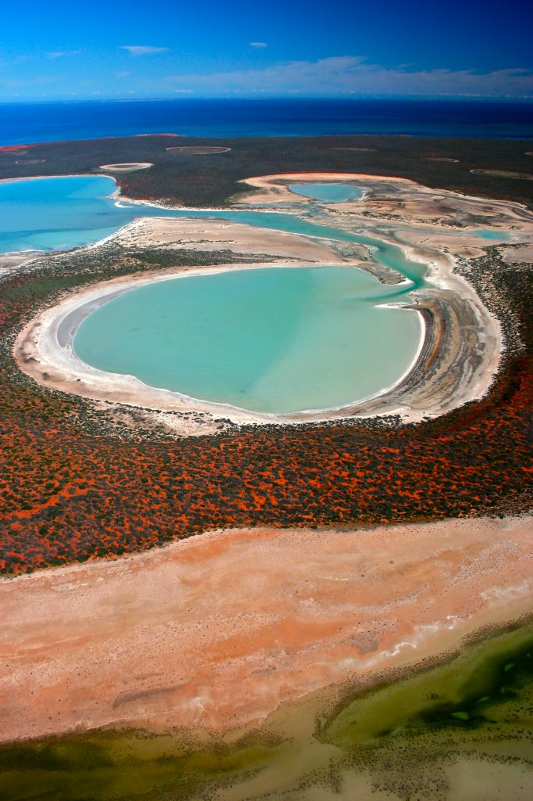
A flooded birrida - big lagoon
10K - 8K YEARS AGO
Land access to Dirk Hartog, Dorre, and Benier Islands were cut off due to rising sea levels. Birridas were also filled with saline waters, creating lakes which would later dry out leaving powdery gypsum.
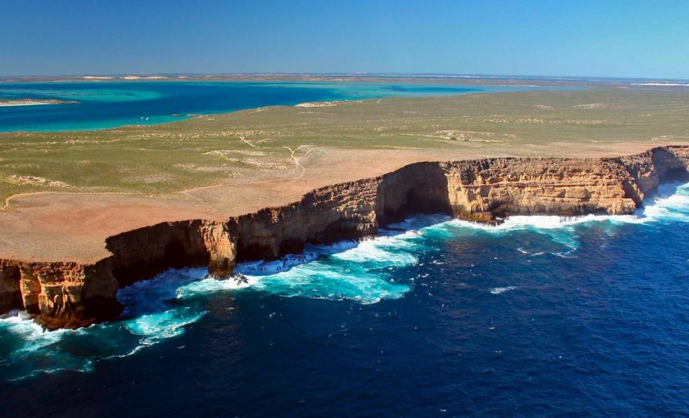
Zuytdorp cliffs
10K - 5K YEARS AGO
Earthquakes caused the formation of the Zuytdorp cliffs due to the land shifting on a fault line.
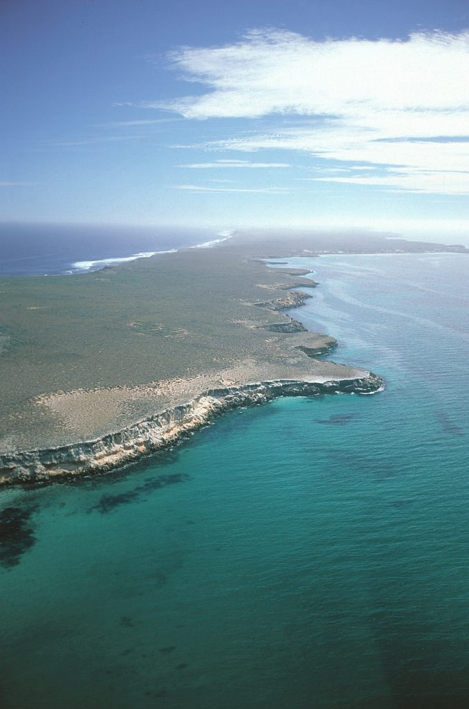
Dorre Island
6K - 3K YEARS AGO
Dorre and Benier Islands were separated from each other due to rising sea levels.
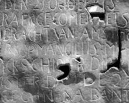
A plate enscribed with details of the visit which was left on the island
1616
Dirk Hartog was the first European to arrive in Shark Bay.
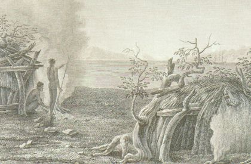
Aboriginal huts as depicted by a European in 1803
1772
French explorers first interacted with the aboriginal people.
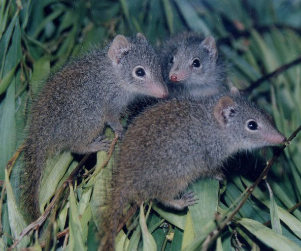
The dibbler - one species that did not survive the changes to the land which has now been brought back
1801
When French explorers visited the area, 23 mammal species were recorded in the area, less than half of which remained when restoration efforts began.
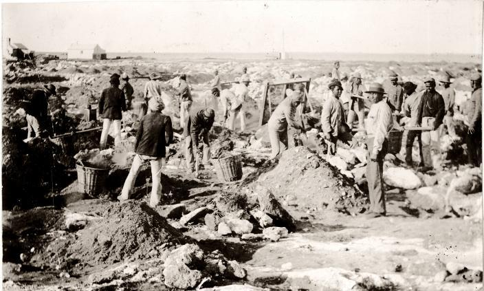
Guano mining
1850
European settlement began in the area, and the land and its resources were taken advantage of including the first land-based industry of guano mining.
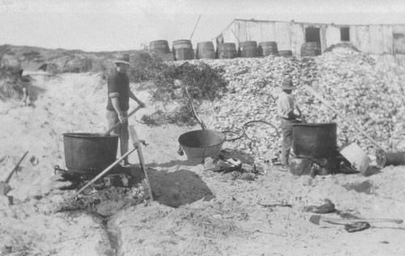
Boiling out pearls
1850s
Starting in the 1850s and peaking in the 1870s, commercial pearling was a prominent industry, which severely limited the wild pearl oyster population.
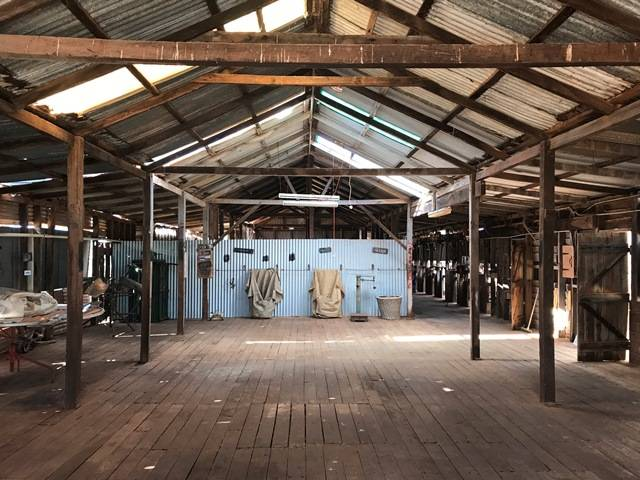
Hamelin Station shearing shed
1869
The first pastoral sheep station was built on Dirk Hartog Island.
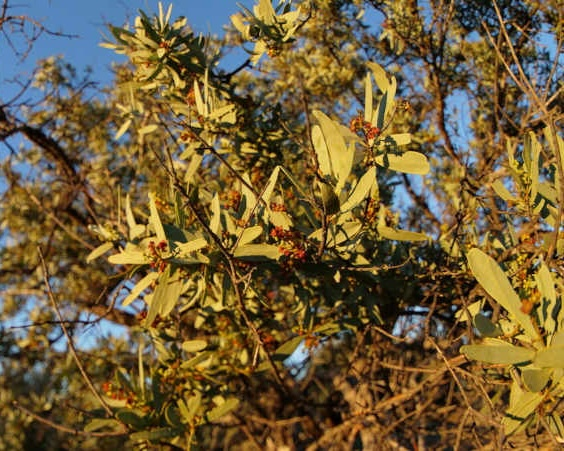
Sandalwood tree
1890s
Sandalwood was commercially harvested and shipped out of the island, and continued until 2000.
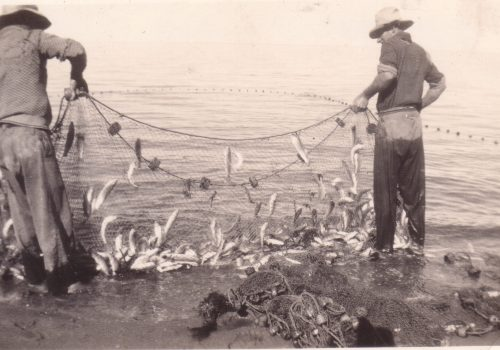
Net fishing
1930s
Fishing became a viable industry, and fishing licenses today can only be passed down through families in order to preserve the traditional fishing methods and fish stock.
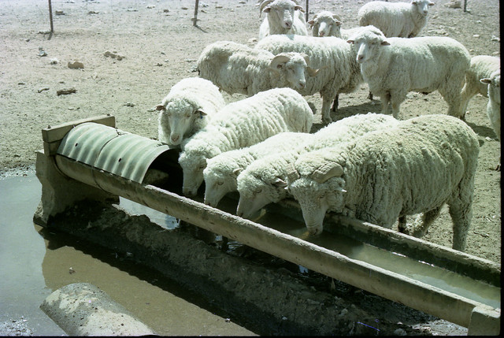
Sheep drinking from a trough
1960s
Sheep populations reached about 142,000 in Shark Bay.
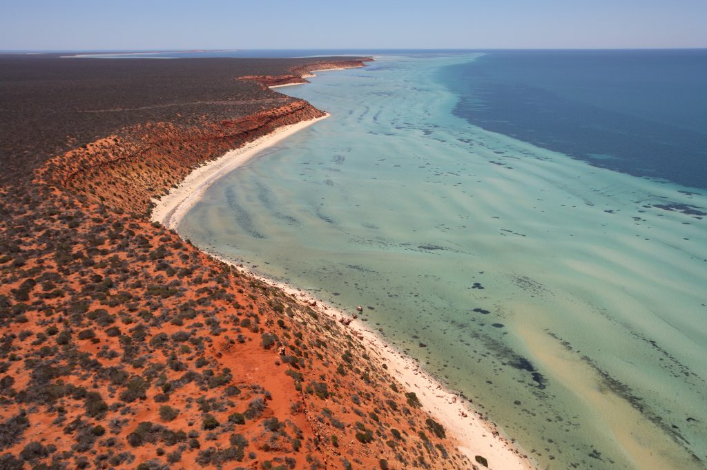
Francois Peron National Park
1990
A 40,000 hectare pastoral station in Peron was bought by the Western Australian Government for conservation efforts, later turned into the Francois Peron National Park.
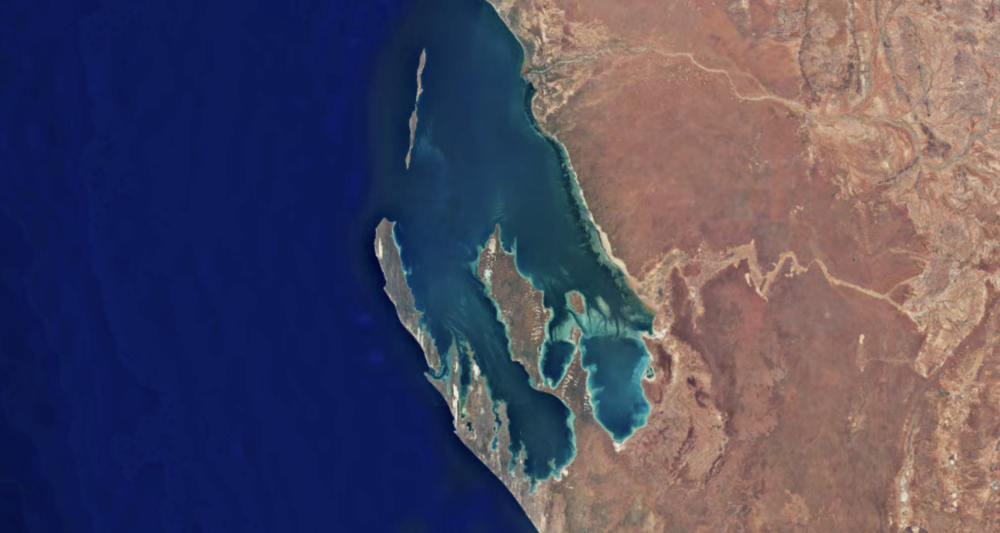
Shark Bay satellite view
1991
Shark Bay was declared a World Heritage Site, satisfying all four natural criteria.
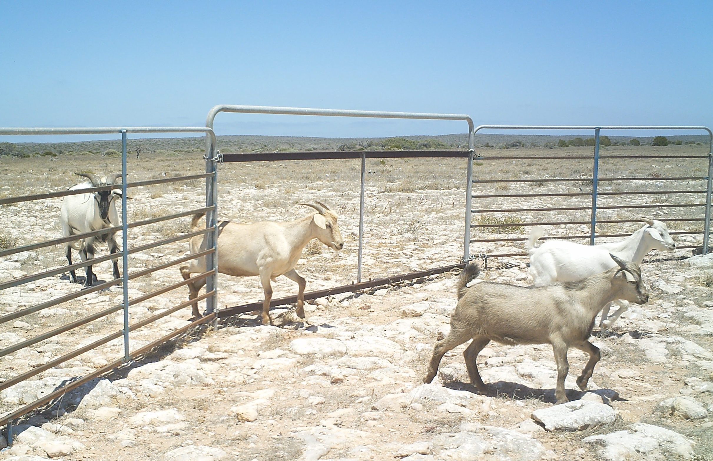
Goats in enclosure
1995
Project Eden was launched with the aim of removing pastoral and feral animals, and reintroducing native species.
Bilby being tagged at the Peron Captive Breeding Centre
1996
As part of Project Eden, the Peron Captive Breeding Centre was established to understand more about animal behaviors and reintroduce species to the Peron Peninsula.
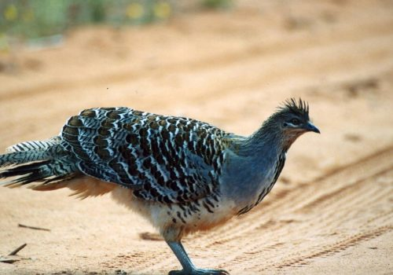
Malleefowl
1997
The Malleefowl was successfully reintroduced as part of Project Eden. At the same time, Woylies were reintroduced but the effort was unsuccessful.
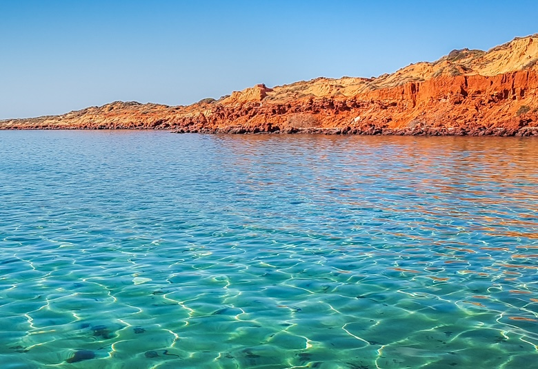
Faure Island
1999
The Western Australian Government purchased Faure Island to continue conservation efforts.
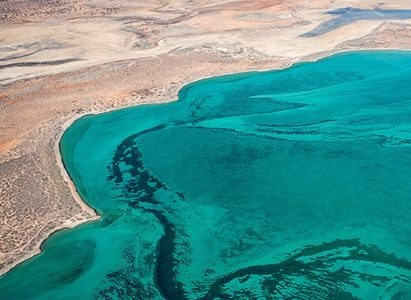
Nanga bay
2000
The Nanga pastoral land was purchased by the Commonwealth and Western Australian Government to protect and conserve the area, including the tree heath.
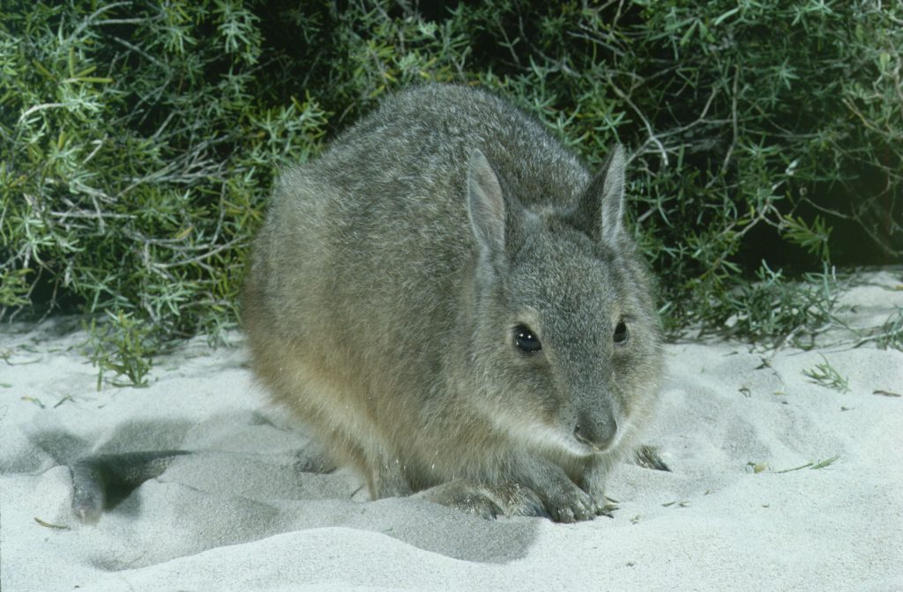
Rufous hare-wallaby
2001
Both banded hare-wallabies and rufous hare-wallabies were unsuccessfully reintroduced on the Peron Peninsula as part of Project Eden due to remaining feral cat populations.
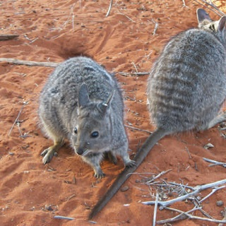
Banded hare-wallaby
2004
Banded hare-wallabies were released on Faure Island and were successfully reintroduced as part of Project Eden.
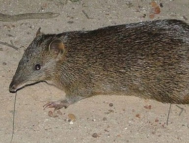
Quenda (southern brown bandicoot)
2006
Quendas (or southern brown bandicoots) were unsuccessfully reintroduced on the Peron Peninsula as part of Project Eden.
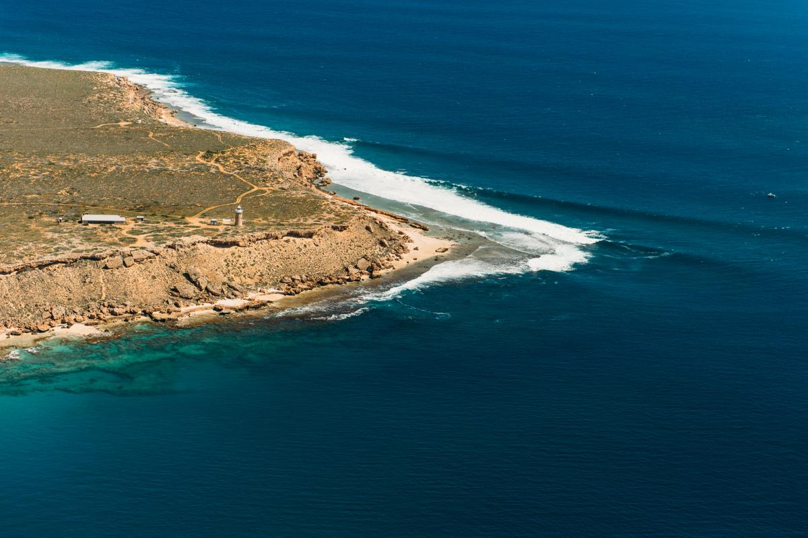
Cape Inscription at Dirk Hartog Island
2009
Dirk Hartog Island was declared a National Park.
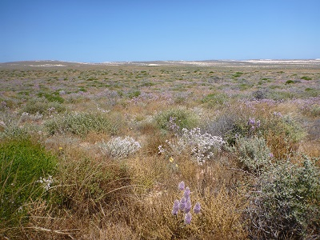
Dirk Hartog Island landscape
2012
The Dirk Hartog Island National Park: Return to 1616 project was started with the goal of returning the island to its state before the first Europeans arrived in Shark Bay by removing invasive species and reintroducing native ones.
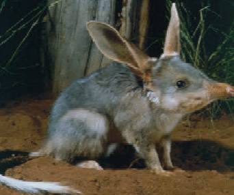
Bilby
2013
Bilbies were successfully reintroduced to the Peron Peninsula as part of Project Eden.
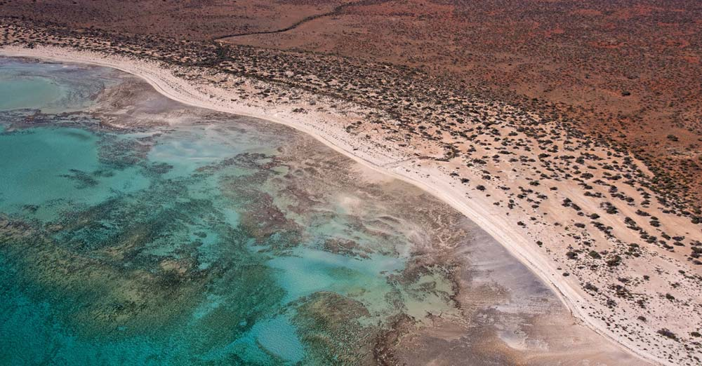
Hamelin Pool coastline
2015
Bush Heritage (a nonprofit conservation organization) bought the Hamelin station.
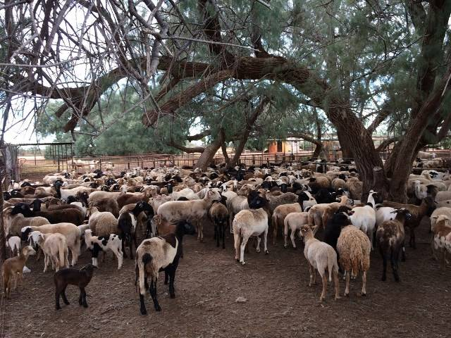
Sheep at Hamelin station
2016
As part of the Return to 1616 project, all sheep were removed from Dirk Hartog Island.
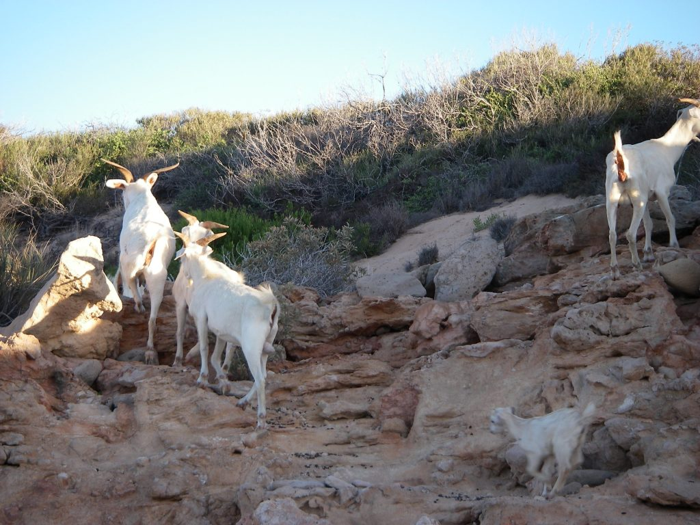
Goats on Dirk Hartog Island
2017
All goats were removed from Dirk Hartog Island as part of the Return to 1616 project.
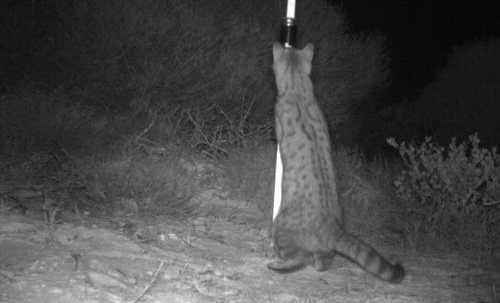
Feral cat at camera trap
2018
As part of the Return to 1616 project, feral cats were eradicated from Dirk Hartog Island. In the same year, banded hare-wallabies and rufous hare-wallabies were reintroduced to the island.
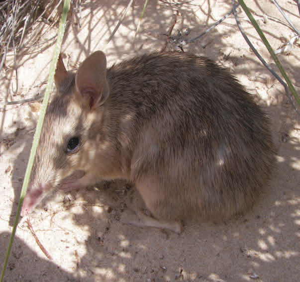
Shark Bay bandicoot
2019
Shark Bay bandicoots and dibblers were reintroduced to Dirk Hartog island as part of the Return to 1616 project.
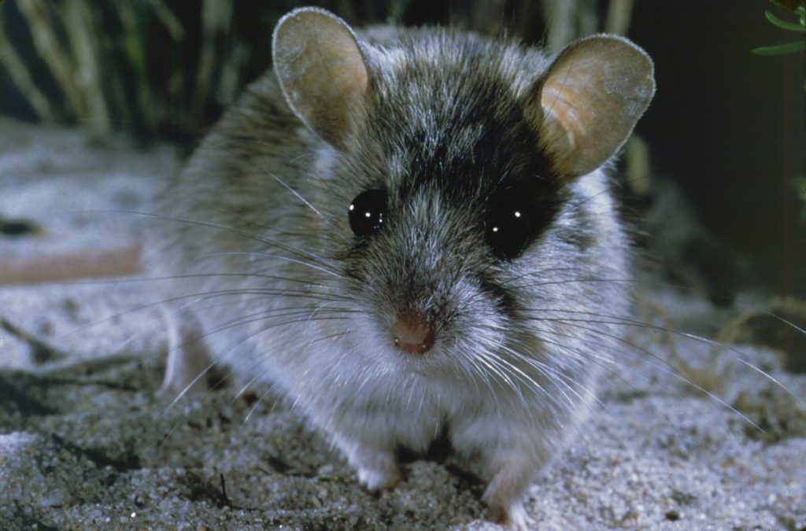
Shark Bay mouse
2021
As part of the Return to 1616 project, the Shark Bay mouse and greater stick-nest rat were reintroduced to Dirk Hartog Island.
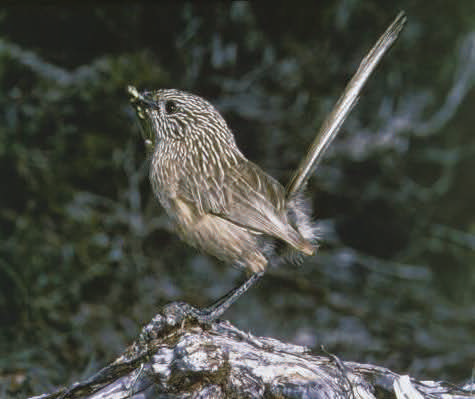
Western grasswren
2022
The western grasswren was reintroduced to Dirk Hartog Island as part of the Return to 1616 project.
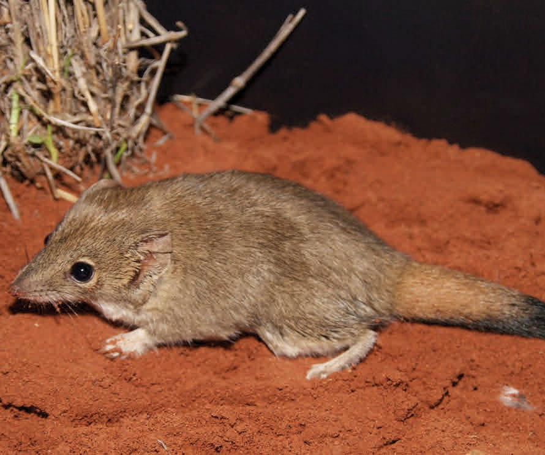
Brush-tailed mulgara
2023
As part of the Return to 1616 project, the brush-tailed mulgara was reintroduced to Dirk Hartog Island.
What happens next is up to all of us. Care must be taken to protect the native species of the land, and the historical heritage sites it contains. Take care when visiting Shark Bay, and follow the guidelines to preserve the flora and fauna.